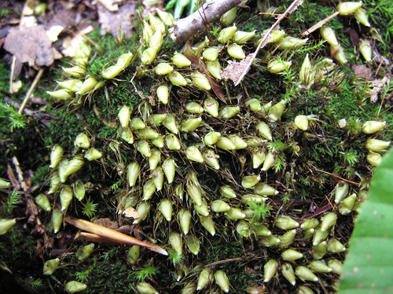

Diphysciaceae
Short-stalk Moss Family / Powder Gun Moss Family
Diphysciaceae is a small but highly distinctive family of mosses, characterized by its minute gametophytes often obscured by large perichaetial leaves, and especially by its large, asymmetrical, obliquely oriented capsule borne on a very short seta. Typically found forming dark green patches on shaded soil banks and rocks in temperate regions.
Overview
The Diphysciaceae family stands out within the mosses (Bryophyta) due to its highly unusual morphology, particularly the relationship between the gametophyte and sporophyte generations. The persistent protonema and tiny vegetative shoots are often inconspicuous, while the female reproductive structures are surrounded by large, specialized leaves. However, the most striking feature is the sporophyte: a large, oddly shaped capsule that appears almost sessile (stalkless), nestled among the perichaetial leaves.
Containing primarily the genus Diphyscium, this family is found worldwide, predominantly in temperate zones, favouring shaded, acidic soil or rock substrates, often on banks along trails or streams. Their small size and cryptic gametophytes mean they are often overlooked until the distinctive capsules mature.
The unique structure of Diphysciaceae has led to debate regarding its evolutionary relationships, with the family sometimes placed in its own order (Diphysciales) or associated with orders like Funariales or Encalyptales. Studying this family provides insights into the diversity of reproductive strategies and morphological adaptations within mosses.
Quick Facts
- Scientific Name: Diphysciaceae
- Common Name: Short-stalk Moss Family, Powder Gun Moss Family
- Number of Genera: 1 (Diphyscium)
- Number of Species: Approximately 15-20
- Distribution: Widespread, especially in temperate regions of the Northern and Southern Hemispheres.
- Evolutionary Group: Bryophytes - Bryopsida (True Mosses) - Order uncertain (Diphysciales / Funariales / Encalyptales)
Key Characteristics
Diphysciaceae possess several unique features setting them apart from most other moss families.
Gametophyte Form and Habit
The photosynthetic generation (gametophyte) is relatively reduced and atypical:
- Protonema: Often persistent and conspicuous, forming a green felt on the substrate.
- Vegetative Stems & Leaves: Stems are very short, often bud-like. Vegetative leaves are small, sparse, typically lanceolate with a costa (midrib), and often quickly disintegrating or hidden.
- Perichaetial Leaves: In contrast, the leaves surrounding the female reproductive organs (archegonia) are much larger, more numerous, and persistent. They are often linear-lanceolate to strap-shaped, sometimes fringed or ciliate at the apex, and form a conspicuous rosette or tuft that obscures the vegetative plant.
- Male Plants: Often minute and bud-like (dwarf males), sometimes growing on the protonema or rhizoids of the female plants, or on separate, small plants.
Leaves (Phyllids)
Two distinct types based on function:
- Vegetative Leaves: Small, simple, lanceolate, usually with a single costa ending before the apex. Cells are typically smooth, roughly isodiametric to shortly rectangular.
- Perichaetial Leaves: Much larger (several mm long), linear-lanceolate to lingulate, erect, forming a sheath around the developing sporophyte. Costa may be present or absent. Apices can be acute, rounded, or fringed.
Note: Unlike peat mosses, there is no differentiation into hyaline and chlorophyll cells.
Reproductive Structures
- Archegonia (female organs) are borne terminally on the main shoots, surrounded by the large perichaetial leaves.
- Antheridia (male organs) are borne terminally on separate, often minute male plants or dwarf males.
Sporophyte
The sporophyte (diploid generation) is the most diagnostic feature of the family:
- Seta: Extremely short, almost absent, resulting in a nearly sessile capsule embedded within the perichaetial leaves.
- Capsule: Very large relative to the gametophyte, strongly asymmetrical and obliquely oriented (tilted). Shape is often conical, ovate-conical, or top-shaped, sometimes likened to a grain of wheat or a powder horn/gun. The capsule wall is thick.
- Operculum: A small, distinct, conical lid at the capsule apex.
- Peristome: Present but often rudimentary or specialized. Typically consists of 16 short outer teeth and a delicate, pleated, conical inner membrane (endostome).
Spores
Spores are typically spherical, relatively small, and finely papillose (minutely bumpy).
Chemical Characteristics
No particularly unusual chemical characteristics are widely reported for this family compared to other Bryopsida mosses.
Field Identification
Identifying Diphysciaceae is usually straightforward once the unique sporophytes are observed. The gametophytes alone can be easily overlooked.
Primary Identification Features (Hand Lens Level)
- Capsule Shape and Position: This is the key! Look for the large (relative to the plant), asymmetrical, conical or top-shaped capsules that sit almost directly on the substrate, nestled within a tuft of larger leaves. They are distinctly tilted or oblique.
- Habitat: Typically found on shaded, damp, acidic soil banks (like trail cuts), humus over rock, or crevices in non-calcareous rock.
- Appearance of Patches: Often form small, dense, dark green patches. The large perichaetial leaves may be visible, but the capsules are the most eye-catching feature when present.
Secondary Identification Features
- Minute Gametophyte: Recognizing the very small vegetative stems requires careful searching amongst the larger perichaetial leaves and protonema.
- Large Perichaetial Leaves: Observing the rosette of larger, often strap-shaped leaves surrounding the capsule base.
- Persistent Protonema: Sometimes visible as a green film on the substrate around the plants.
Seasonal Identification Tips
Gametophytes and protonema are present year-round but inconspicuous.
- Year-Round: Look for the dark green patches and persistent protonema. Perichaetial leaves are also persistent.
- Late Summer to Spring (Varies): This is when the highly distinctive capsules mature and become most visible. They are quite persistent even after spore release.
Common Confusion Points
Due to the unique capsule, confusion with other mosses is minimal once sporophytes are seen.
- Other Mosses (Sterile): If capsules are absent, the small gametophytes with large perichaetial leaves might vaguely resemble sterile forms of other turf-forming mosses (e.g., Pogonatum, some Dicranaceae), but the persistent protonema and extremely reduced vegetative shoots are characteristic.
- Liverworts (Sterile): The green protonemal felt might be mistaken for a thalloid liverwort, but closer inspection reveals the bud-like moss shoots.
- Fungi: The unusual shape and orientation of the capsules have occasionally led to confusion with small fungi like earth tongues (Geoglossaceae) from a distance, but closer inspection reveals the moss structure.
Field Guide Quick Reference
Look For:
- Large, asymmetrical, oblique capsules
- Capsules nearly sessile (very short seta)
- Capsules nestled in large perichaetial leaves
- Tiny vegetative gametophytes
- Habitat: Shaded soil/rock banks
Key Distinctions:
- Capsule shape/orientation unique among mosses
- Seta much shorter than most mosses
- Combination of tiny vegetative plant + large perichaetial leaves + huge, sessile capsule is diagnostic
Notable Examples
The family primarily consists of the single genus Diphyscium.

Diphyscium foliosum
(Nut Moss - informal name)
This is a widespread and commonly encountered species in the Northern Hemisphere. It exemplifies the family characteristics: minute vegetative plants, prominent perichaetial leaves, and the large, oblique, nearly sessile, conical capsule resembling a tiny powder horn or grain of wheat. Found on acidic soil banks in woodlands.
Phylogeny and Classification
Diphysciaceae is placed within the class Bryopsida (true mosses). However, its precise position within the class has been debated. Its highly specialized and unique morphology, particularly the sporophyte structure, makes it difficult to place confidently based solely on morphology.
Historically and currently, its ordinal placement varies depending on the classification system used:
- Diphysciales: Often placed in its own monotypic order, reflecting its unique features.
- Funariales: Sometimes included within or near the Funariales, which includes families like Funariaceae (e.g., Funaria).
- Encalyptales: Some molecular studies suggest a relationship with the Encalyptales (e.g., Encalypta - extinguisher mosses).
Regardless of the specific order, Diphysciaceae represents a distinct and somewhat isolated lineage within the Bryopsida, showcasing a unique evolutionary pathway in moss development.
Position in Plant Phylogeny
- Kingdom: Plantae
- Clade: Embryophyta (Land Plants)
- Division: Bryophyta (Mosses)
- Class: Bryopsida
- Order: Diphysciales / Funariales / Encalyptales (Placement Uncertain)
- Family: Diphysciaceae
Evolutionary Significance
Diphysciaceae is significant for several reasons:
- Morphological Extremes: Demonstrates extreme modification of the typical moss sporophyte (reduced seta, asymmetrical capsule).
- Gametophyte Reduction: Shows reduction in the vegetative gametophyte relative to reproductive structures (perichaetial leaves).
- Phylogenetic Puzzle: Its uncertain placement highlights challenges in resolving deep relationships within mosses and the importance of integrating molecular and morphological data.
- Ecological Niche: Occupies a specific niche on stable, shaded soil and rock surfaces.